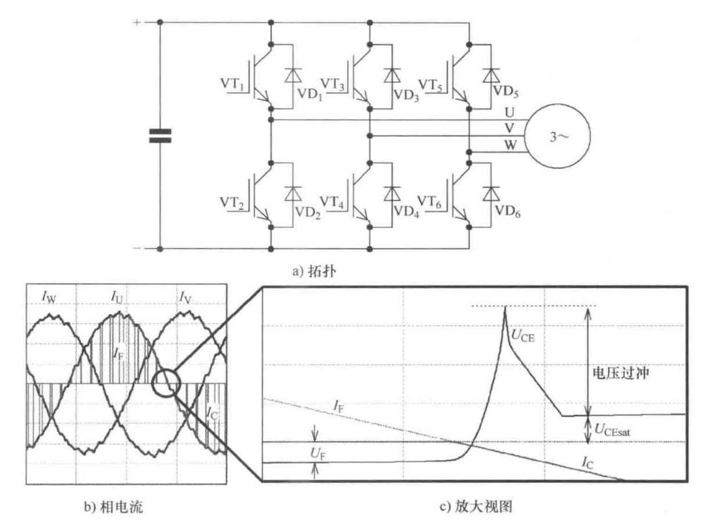
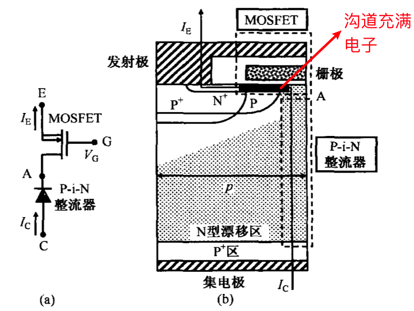
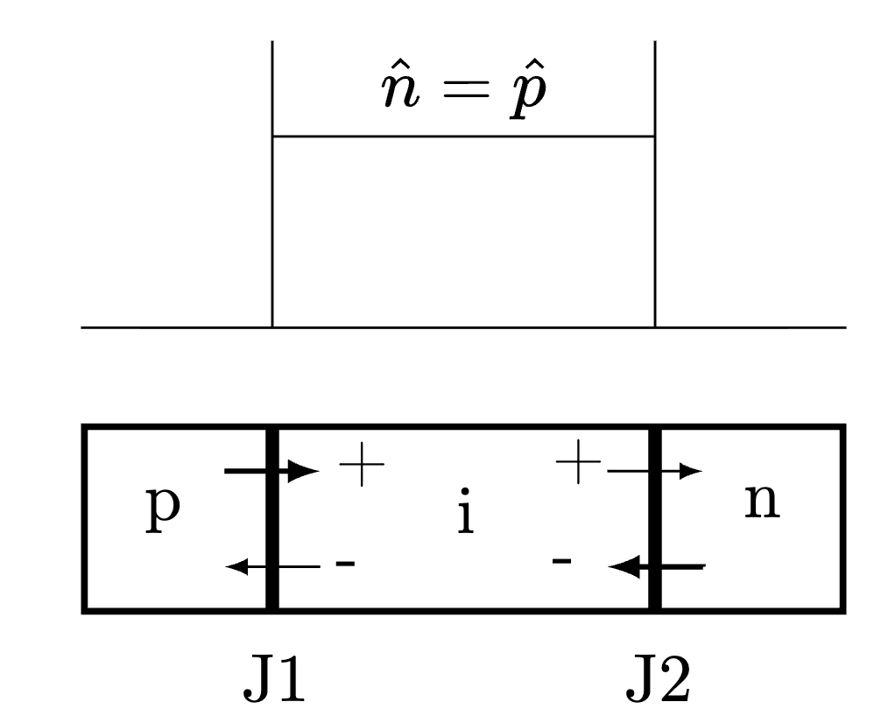
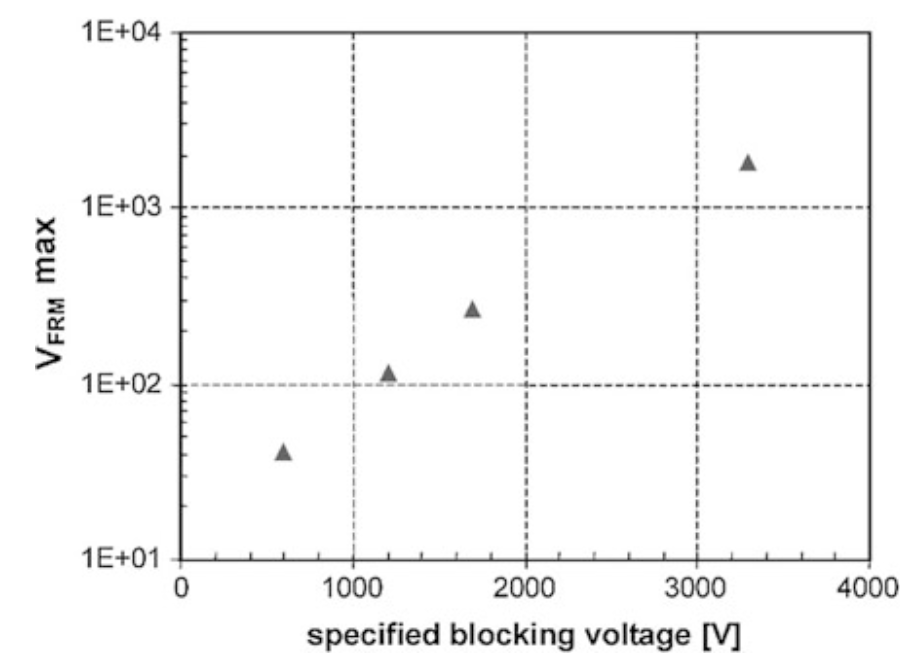

IGBT的正向恢复
Table of Contents
1. 问题
最近朋友遇到一个蛮有意思的故障误报：空载起机增加电流瞬间误报IGBT退饱和故障。英飞凌介绍，在零电流转换的谐振应用中，这种 \(V_{ce,sat}\) 的误动作其实非常典型[1]。
在下面的示例电路中，如果VT2开通，而电流 \(I_U\) 由流出逆转为流入变换器，那么电流会从二极管VD2（流出）转移到IGBT VT2（流入）上。IGBT早已开通，但是之前并没有电流，按照理想的IV曲线，已经开通的器件流过电流时两端只有很小的导通压降。

Figure 1: 电流过零点附近触发退饱和报警
但实际上，这个瞬间IGBT两端会先产生一个很大的电压尖峰（其数值足以触发退饱和故障，且通常很快），一段时间后才会降低到导通压降。
原因在于，确定导通压降的IV曲线是建立在稳态前提上的，但此处很快的尖峰说明存在不容忽视的暂态过程。
2. IGBT/pin二极管的通态工作原理
首先要简明了解IGBT何以在稳态情况下导电。
到栅极开启时，栅极下方的沟道被电子充满，等效为可以提供电子的电子源，可以提供负电荷；而靠近集电极的P+区则是空穴源，可以提供正电荷；位于两者之间的N型漂移区掺杂浓度很低，可以认为正负电荷都不多。
这样看来，IGBT可以等效为一个pin二极管。

Figure 2: IGBT通态的等效电路
pin二极管结构是功率器件的基础结构之一，这里用简要概述它的工作原理。在pin二极管中，p区与n区的掺杂浓度非常高，所以J1结和J2结的发射效率是1，也就是说，p区只能提供正电荷（空穴），且不接收负电荷（电子）；n区只能提供负电荷（电子），但是不能接收正电荷（空穴）。
可以看到在J1位置，空穴被源源不断地注入i区（原本是空的），但是被注入空穴无法被J2结接收，因此空穴无法通过J2位置； 而在J2位置，电子被注入i区，但是这些电子无法通过J1位置。
所以，在导通稳态情况下，空穴和电子被注入并堆积在i区域内，无法离开，并且电子 \(\hat{n}\) 和空穴 \(\hat{p}\) 的浓度近似相等。这里不妨假设两者在整个i区都位置在均匀的水平。
注意到，外部注入的电子和空穴无法离开i区，那么就只能通过i区内部的复合过程消除（中和），否则i区的电子空穴将会无限制变多，这是不可能的。
单独把空穴作为研究对象可以发现，空穴只能通过J1位置提供，每秒钟被注入的正电荷是J1处的电流密度乘以时间\(1s \cdot I_{p1}\)，该数值与总电流 \(I\) 相等。
被中和的空穴数量由其寿命 \(\tau\) 决定，每经过 \(\tau\) 原本的空穴都会被完全清除，所以1s中完成了 \(1/ \tau\) 次清除，每次清除的空穴的数量是浓度乘以i区的体积 \(\hat{p}\cdot V\).
由于提供与消除相等，因此
\begin{equation} \label{} I=I_{p1}= \frac{V}{\tau} \hat{p} \end{equation}可以看到，决定IGBT/pin二极管导通电流水平的其实是i区中电子和空穴的浓度 \(\hat{p}, \hat{n}\).1
因此，尽管IGBT已经开通，但如果没有电流流过，那么i区/漂移区中的电子/空穴浓度将非常低，实际上并不具有理想的导通大电流的能力。
此时如果电流以近乎阶跃的速度涌入，那么IGBT/pin二极管两端的将会出现很大的压降，因为电子和空穴需要一定时间才能扩散到i区并达到需要的浓度。
这个过程称为正向恢复。

Figure 3: pin的结构和原理
3. 暂态过程
可以看到，这里我们遇到一个无法被稳态IV曲线描述的暂态过程，此时它不是沿着稳态曲线的轨迹运动的，这个过程受制于载流子向i区的扩散行为。
由于是暂态过程，描述它不仅需要扩散所及的空间作为变量，还需要时间变量：
\begin{equation} \label{} \frac{ \partial \Delta n (x,t) }{ \partial t } = D_n \frac{ \partial ^2 \Delta n(x,t) }{ \partial x^2 } \end{equation}这个偏微分方程描述了不同时间和空间上，相对于稳态电子水平的过量电子浓度是怎么变化的。
如果我们知道每个时刻、每个位置的电子/空穴浓度，就可以不同位置的等效电阻，从而计算pin二极管两端的电压，一个近似解是[2]：2
\begin{equation} \label{} \Delta n(x,t) = \frac{a t ^ {3/2}}{q \sqrt{D_n} }e^{-(x/\sqrt{4D_n t})} \end{equation}其中 \(a\) 是外部施加电流的上升斜率。
事实上，无须这个复杂的解也能想到：
- 对同样的外部电流条件，要想让i区中的某个位置的载流子浓度上升到需要的水平，需要一定时间（一般小于us，大于ns；3.3kV以上的IGBT器件即使正常开通也需要数us）；
- i区中离注入位置(J1与J2)越远，那么它需要的时间越长；因此，耐压越高的芯片，i区越宽，电压尖峰、需要的扩散时间就越长，正向恢复问题越严重。
因此，如果电流上升非常快，接近阶跃，那么在正向恢复时间初期可以通过下面的简化形式理解电压尖峰：假设i区完全来不及注入，那么i区可以看作一个电阻，其电阻率已知为 \(\rho = 1/q \mu_n N_D\) ，则正向恢复的电压尖峰
\begin{equation} \label{} V_{peak} = \frac{ j \cdot w_i}{q \mu_n N_D} \end{equation}其中 \(j\) 为电流密度， \(w_i\) 为i区宽度， \(u_n\) 为电子迁移率， \(N_D\) 为i区很低的掺杂。
使用这个简化估计可以看出，没有经过良好设计的pin结构产生的正向恢复压降是惊人的[3]。

Figure 4: 估计的正向恢复电压尖峰与器件阻断电压的关系
4. 其他问题
- 容易触发退饱和误动作，随着IGBT电压等级升高，正向恢复的电压尖峰很容易超过退饱和阈值
- 二极管侧的正向恢复尖峰以反向偏压形式加在并联的 IGBT 两端。普通非对称 PT/FS IGBT 几乎没有反向阻断能力，过高的尖峰会直接危及IGBT，在3kV以上的IGBT中，反并联二极管曾经引发IGBT失效[3]。